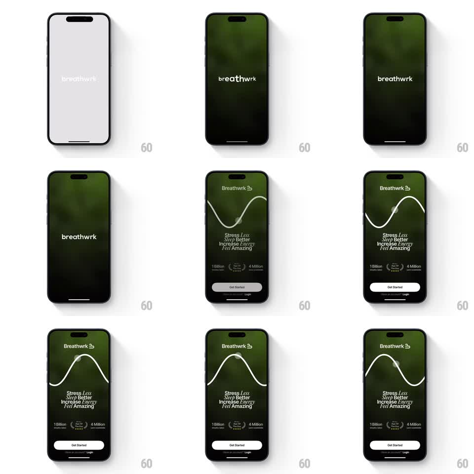

Media
Frame-by-frame

Rebuild this animation 1:1: Breathwrk's splash-to-login - the wordmark on a minimal field crossfades into a dark green textured onboarding screen where a white breathing wave undulates across the top above benefit copy and Get Started / Login buttons.

Rebuild this animation 1:1: Breathwrk's splash-to-login - the wordmark on a minimal field crossfades into a dark green textured onboarding screen where a white breathing wave undulates across the top above benefit copy and Get Started / Login buttons.
## Integration
Integration: stack-agnostic spec - springs given as stiffness/damping, timed motions as duration + curve; map every value to your framework and animation library of choice.
## Scene
Splash: light field, centered "breathwrk" wordmark. Onboarding: dark green atmospheric background, "Breathwrk" logo top, a thin white sine wave flowing horizontally across the upper third, benefit lines ("Stress Less / Sleep Better / Increase Energy / Feel Amazing"), social-proof stats (1 Billion breaths, App of the Day, 4 Million downloads), white Get Started button, Login link.
## Motion spec
Pattern: wave-reveal onboarding transition.
- Splash wordmark fades (400ms) as the green background crossfades in (500ms).
- The white wave draws on from left to right (600ms) and immediately begins undulating: a smooth sine travels continuously (~4s per cycle, amplitude ~40px), with a soft glow dot riding the crest.
- Benefit lines fade in staggered (200ms each, 80ms apart) under the wave, each with a subtle color tint shift as the wave passes behind.
- Stats row fades in (300ms), then Get Started rises 10px + fades (300ms), Login last (200ms).
- The wave never stops: it loops behind the content for the whole session.
## Calibration
- The wave is the single living element - everything else lands once and holds.
- Amplitude stays modest; this is a breath cue, not a visual equalizer.
## Reduced motion
Wave renders static at mid-cycle; no travel.
## Don't miss
- The glow dot on the crest is the "breath" - it must ride the wave, not float free.
- Background is a dark green organic gradient/texture, not flat black.